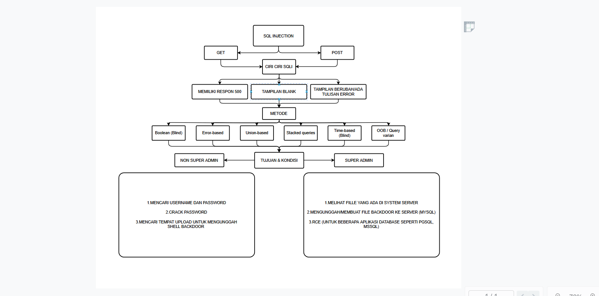

Apa Itu SQL Injection?
SQL Injection (SQLi) adalah kelemahan ketika data yang seharusnya diperlakukan sebagai nilai biasa justru ditafsirkan sebagai bagian dari sintaks atau instruksi SQL.
Aplikasi web umumnya menerima input, memprosesnya, lalu mengirim query ke Database Management System (DBMS). SQLi dapat terjadi ketika aplikasi menyusun query dengan menggabungkan input yang tidak tepercaya ke dalam teks SQL tanpa pemisahan yang aman antara query structure dan data value.
SQLi dapat muncul pada aplikasi yang memakai SQL secara langsung maupun melalui lapisan abstraksi seperti ORM. Penggunaan ORM tidak otomatis menghilangkan risiko jika query dibangun melalui string dinamis yang tidak aman.
Diagram Percabangan SQL Injection
Diagram berikut adalah peta awal yang dibuat penulis untuk menghubungkan titik masuk, indikasi respons, kategori SQLi, privilege database, dan kemungkinan dampak. Diagram dipertahankan sebagai bagian dari identitas metodologi ZeroHitman.

Bagaimana SQL Injection Bekerja?
Untuk memahami SQLi, pisahkan alur aplikasi menjadi beberapa komponen. Browser atau client mengirim input; server menerima dan memvalidasinya; kode aplikasi membentuk query; DBMS menafsirkan query; hasilnya dikembalikan ke aplikasi dan akhirnya ditampilkan atau diproses.
1. Input
Nilai berasal dari request, data tersimpan, API lain, atau sumber eksternal.
2. Query construction
Aplikasi menentukan struktur SQL dan memasukkan nilai yang dibutuhkan.
3. DBMS parsing
Database membaca dan menafsirkan struktur query sesuai dialect dan konteksnya.
4. Result handling
Aplikasi menerima hasil, error, perubahan status, atau respons lain.
SQLi terjadi ketika batas antara data dan instruksi tidak dijaga. Akibatnya, input dapat memengaruhi kondisi, operasi, atau struktur query di luar maksud awal aplikasi.
Mengapa SQL Injection Terjadi?
Penyebab yang paling umum adalah query dinamis yang dibentuk dengan concatenation atau interpolasi string dari input yang tidak tepercaya. Namun, sumber masalah bisa berada di beberapa lapisan.
| Penyebab | Penjelasan | Hal yang perlu ditinjau |
|---|---|---|
| String concatenation | Input digabungkan langsung ke teks query. | Apakah nilai dipisahkan dari struktur SQL? |
| Dynamic SQL | Query dibangun saat runtime berdasarkan input atau kondisi tertentu. | Apakah nilai dan identifier dikendalikan dengan aman? |
| Unsafe stored procedure | Procedure menerima parameter, tetapi kemudian menyusun dynamic SQL secara tidak aman. | Periksa isi procedure, bukan hanya cara pemanggilannya. |
| ORM/query builder misuse | Developer memasukkan input ke raw query atau ekspresi query dinamis. | Periksa raw expression, raw where, dan query string. |
| Second-order SQLi | Data disimpan terlebih dahulu, lalu digunakan kemudian dalam query yang tidak aman. | Telusuri aliran data dari penyimpanan hingga penggunaan ulang. |
| Unsafe identifier selection | Input memengaruhi nama kolom, tabel, atau arah pengurutan tanpa allow-list. | Gunakan pemetaan nilai yang ditentukan aplikasi. |
Input validation tetap berguna untuk memastikan format dan aturan bisnis, tetapi validasi bukan pengganti parameterization. Escaping manual juga bukan pertahanan utama karena aturan escaping dapat berbeda antar-dialect dan konfigurasi.
GET, POST, dan Sumber Input Lain
Diagram SQLi milik penulis dimulai dari GET dan POST. Keduanya adalah metode HTTP yang sering membawa input, tetapi bukan jenis SQL Injection. SQLi ditentukan oleh bagaimana aplikasi menggunakan nilai tersebut ketika membangun query.
GET
Data sering berada pada URL/query string. Parameter pencarian, filter, pagination, dan identifier dapat menjadi input aplikasi.
POST
Data sering berada pada request body, misalnya form, JSON, atau payload API. POST tidak otomatis lebih aman daripada GET.
Cookie & Header
Nilai cookie, header khusus, atau metadata request dapat dipakai aplikasi dalam query.
Other Data Sources
Data dari API pihak ketiga, antrean, email, file import, atau database sendiri dapat menjadi sumber input tidak tepercaya.
Karena itu, pemeriksaan tidak boleh berhenti pada parameter URL. Telusuri data flow sampai ke query yang benar-benar dijalankan.
Indikasi dan Respons yang Perlu Dipahami
Diagram penulis menampilkan tiga respons awal: HTTP 500, tampilan blank, dan tampilan berubah atau memunculkan tulisan error. Ketiganya dapat menjadi petunjuk untuk ditinjau, tetapi tidak membuktikan SQLi dengan sendirinya.
| Indikasi | Kemungkinan penjelasan | Interpretasi yang hati-hati |
|---|---|---|
| HTTP 500 | Exception aplikasi, query error, atau kegagalan komponen lain. | Perlu korelasi dengan log aplikasi/database; bukan bukti tunggal. |
| Blank / respons kosong | Error yang disembunyikan, hasil query kosong, atau masalah rendering. | Bandingkan perilaku normal dan respons yang terkontrol. |
| Konten berubah | Perbedaan hasil query, kondisi aplikasi, cache, atau data. | Pastikan perbedaan dapat direproduksi dan bukan variasi normal. |
| Database error | Pesan error dari driver/DBMS atau exception yang diteruskan aplikasi. | Dapat mengungkap dialect, struktur query, atau detail internal. |
| Perbedaan waktu respons | Operasi database, beban server, jaringan, atau kondisi lain. | Time-based inference memerlukan pengukuran berulang dan kontrol noise. |
Jenis-Jenis SQL Injection
Jenis SQLi dapat dikelompokkan berdasarkan cara hasil atau kondisi query dapat diamati. Istilah berikut sering dipakai dalam materi keamanan aplikasi.
In-band SQL Injection
Hasil dari query yang terpengaruh dapat diamati melalui kanal respons aplikasi yang sama. Dua bentuk yang sering dibahas adalah Error-based dan UNION-based.
Error-based
Informasi diperoleh dari error database atau pesan exception yang muncul. Detail error dapat membocorkan struktur internal, tetapi konfigurasi error handling sangat memengaruhi visibilitasnya.
UNION-based
Konsepnya menggabungkan hasil query lain ke result set yang ditampilkan aplikasi. Kelayakannya dipengaruhi bentuk query awal, kompatibilitas kolom dan tipe data, serta cara aplikasi merender hasil.
Boolean-based Blind
Hasil disimpulkan dari perbedaan respons ketika kondisi bernilai benar atau salah, walaupun data query tidak ditampilkan secara langsung.
Time-based Blind
Inferensi dilakukan melalui perbedaan waktu respons yang dipicu kondisi database. Latensi jaringan, beban server, dan timeout dapat menghasilkan noise.
Stacked Queries
Terjadi ketika konteks eksekusi memungkinkan lebih dari satu statement diproses dalam satu rangkaian. Dukungan ini bergantung pada DBMS, driver, API database, dan konfigurasi aplikasi. Tidak semua koneksi mengizinkannya.
Out-of-band (OOB)
Informasi atau sinyal dikirim melalui kanal berbeda dari respons HTTP utama, misalnya interaksi jaringan yang dipicu DBMS. Ini bukan fitur universal dan sangat bergantung pada kemampuan DBMS, konfigurasi jaringan, serta hak akses.
DBMS yang Umum Ditemui pada Aplikasi Web
SQL adalah bahasa query, sedangkan DBMS adalah perangkat lunak yang mengelola database. SQLi bukan hanya terjadi pada satu produk. Dialect SQL, fungsi bawaan, model privilege, driver, dan konfigurasi berbeda antar-DBMS.
| DBMS | Karakteristik umum | Hal yang membedakan analisis |
|---|---|---|
| MySQL / MariaDB | Banyak dipakai pada aplikasi web berbasis PHP dan berbagai CMS. | Privilege akun, fungsi file, konfigurasi secure_file_priv, versi, dan storage engine. |
| PostgreSQL | Digunakan pada aplikasi web, layanan backend, dan sistem data. | Role, extension, hak operasi file/program, konfigurasi server, dan versi. |
| Microsoft SQL Server | Sering ditemukan pada ekosistem aplikasi Microsoft/.NET dan enterprise. | Login/role, server configuration, extended stored procedures, service account, dan fitur integrasi Windows. |
| Oracle Database | Umum pada sistem enterprise dan aplikasi bisnis berskala besar. | Schema, role/system privilege, package, directory object, dan konfigurasi layanan. |
| SQLite | Database embedded berbasis file; sering dipakai aplikasi kecil, desktop, mobile, atau layanan tertentu. | Hak akses file proses aplikasi, lokasi file database, dan batas kemampuan server-side yang berbeda dari DBMS client-server. |
Daftar ini bukan ranking target atau daftar lengkap. DBMS yang digunakan harus dipastikan dari bukti yang sahih, misalnya konfigurasi yang memang tersedia untuk reviewer, dokumentasi aplikasi, atau error disclosure yang sudah diverifikasi.
Apa Dampak SQL Injection?
Dampak tidak ditentukan oleh label SQLi saja. Dampak aktual merupakan gabungan dari data yang dapat dijangkau, operasi yang diizinkan, privilege akun database, konfigurasi DBMS, dan kontrol pada lapisan aplikasi maupun sistem operasi.
Data confidentiality
Pembacaan data yang tidak semestinya, termasuk informasi akun, data pribadi, konfigurasi, atau data bisnis.
Data integrity
Perubahan, penambahan, atau penghapusan record jika query dan privilege memungkinkan operasi tersebut.
Authentication impact
Gangguan terhadap logika login atau sesi dalam kondisi tertentu. Ini tidak otomatis berarti akses administrator.
Availability impact
Operasi database yang berat atau destruktif dapat mengganggu layanan, bergantung pada query dan kontrol sistem.
File-system impact
Fitur tertentu dapat membaca atau menulis file dengan batasan hak akses dan konfigurasi DBMS.
Operating-system impact
Pada konfigurasi tertentu, fitur DBMS atau integrasi eksternal dapat menjadi jembatan menuju operasi sistem operasi.
Percabangan SQL Injection
Bagian ini mempertahankan kelompok cabang yang sudah ditulis pada Tree V5.0. Fungsinya adalah peta kemungkinan yang perlu dipahami dan diverifikasi, bukan checklist eksploitasi dan bukan urutan yang wajib ditempuh.
| Cabang pada Tree V5.0 | Makna konseptual | Hasil/informasi yang mungkin relevan |
|---|---|---|
| 1. Data Extraction | Akses baca terhadap data yang dapat dijangkau query. | Struktur tabel, data akun, konfigurasi, log, session, data transaksi, dan metadata schema. |
| 2. File Read | Kemungkinan pembacaan file melalui kemampuan DBMS atau komponen terkait. | File konfigurasi atau informasi sistem, hanya jika fitur, privilege, dan kebijakan file mengizinkan. |
| 3. File Write | Kemungkinan menulis file melalui fitur database tertentu. | File output pada lokasi yang diizinkan; tidak otomatis dapat ditulis ke webroot atau dieksekusi. |
| 4. UDF / Extension | Fitur ekstensi atau fungsi tambahan yang memperluas kemampuan database. | Perubahan capability DBMS; risiko tinggi bila instalasi atau pemanggilannya memiliki privilege berlebihan. |
| 5. Stacked Queries | Lebih dari satu statement diproses dalam konteks yang mendukungnya. | Potensi operasi data tambahan sesuai hak akses; dukungan tidak universal. |
| 6. OS Command / DBMS Feature | Fitur DBMS tertentu dapat berinteraksi dengan proses atau sistem operasi. | Potensi dampak pada host database, bergantung pada fitur, konfigurasi, dan identitas service. |
| 7. Network / Outbound Interaction | Fungsi DBMS dapat memicu interaksi jaringan tertentu. | Informasi tentang konektivitas keluar atau kebocoran sinyal; bukan SSRF generik dalam setiap kasus. |
| 8. Information Gathering | Pengumpulan metadata dan konteks database. | Versi, nama database, user/role aktif, hostname, lokasi data, dan error detail. |
| 9. Authentication Logic | Query aplikasi yang terkait proses autentikasi dapat memiliki kelemahan logika. | Gangguan autentikasi atau otorisasi dalam kondisi tertentu; harus dibuktikan terpisah. |
File Read, File Write, dan INTO OUTFILE
File Read
File read berarti DBMS atau fungsi terkait dapat membaca file dari sudut pandang server database. Hal ini berbeda dari membaca file melalui web server atau aplikasi. File yang terlihat oleh database dipengaruhi sistem operasi, permission akun service, sandboxing, dan kebijakan DBMS.
MySQL: LOAD_FILE dan SELECT ... INTO OUTFILE
MySQL menyediakan kemampuan file tertentu, tetapi penggunaannya dibatasi oleh privilege FILE, izin filesystem dari proses server, serta konfigurasi secure_file_priv. Pengaturan ini dapat membatasi operasi ke direktori tertentu atau menonaktifkan operasi import/export file.
SELECT ... INTO OUTFILE adalah mekanisme output hasil query ke file. Keberadaan fitur tersebut tidak berarti file dapat ditulis ke lokasi apa pun, ditimpa bebas, atau otomatis dieksekusi oleh web server.
Perbedaan lintas DBMS
Jangan menggeneralisasi nama fitur MySQL ke PostgreSQL, SQL Server, atau Oracle. PostgreSQL memiliki mekanisme COPY dengan aturan akses server-side dan privilege tersendiri. SQL Server dan Oracle memiliki fitur, model permission, serta kontrol berbeda.
SQL Injection dan Kemungkinan RCE
Remote Code Execution (RCE) adalah dampak ketika input atau operasi yang dipengaruhi dari jarak jauh akhirnya menyebabkan perintah atau kode dijalankan pada host. SQLi dapat menjadi bagian dari rantai menuju RCE, tetapi bukan konsekuensi otomatis dari SQLi.
Jalur potensial berbeda antar-platform. Contohnya, SQL Server mempunyai fitur xp_cmdshell yang dapat menjalankan command pada konteks akun service/proxy terkait, tetapi fitur ini dinonaktifkan secara default pada instalasi baru dan membutuhkan permission tinggi. PostgreSQL mempunyai bentuk COPY ... PROGRAM yang menjalankan program pada konteks server dan dibatasi ke role tertentu. MySQL memiliki fitur file/UDF dengan prasyarat berbeda; file write saja belum sama dengan eksekusi kode.
| Faktor | Pertanyaan penilaian | Mengapa penting |
|---|---|---|
| DBMS & version | Produk, versi, dan fitur apa yang tersedia? | Fitur dan perilaku berbeda antar-versi. |
| Database privilege | Apa hak akun database yang digunakan aplikasi? | Menentukan operasi yang diizinkan. |
| Feature configuration | Apakah fitur berisiko diaktifkan? | Banyak fitur dibatasi atau dinonaktifkan secara default. |
| OS service identity | Dengan identitas OS apa service database berjalan? | Menentukan jangkauan akses proses pada host. |
| Filesystem & network | Path dan koneksi apa yang diizinkan? | Kontrol host dapat membatasi dampak lanjutan. |
| Application isolation | Apakah database dan aplikasi dipisahkan? | Segmentasi mengurangi kemungkinan perpindahan dampak. |
Kondisi yang Menentukan Cabang
Diagram penulis membedakan “Non Super Admin” dan “Super Admin”. Pembeda ini dapat dipakai sebagai pengingat bahwa privilege penting, tetapi jangan menganggap hanya ada dua level. Setiap DBMS mempunyai model role dan permission yang lebih rinci.
Membaca dua kelompok kondisi pada diagram penulis
Non Super Admin: diagram menyebut pencarian username/password, pemeriksaan hash, dan kemungkinan menemukan jalur upload aplikasi. Ini bukan dampak otomatis SQLi. Pengungkapan credential bergantung pada data yang dapat dibaca; pemeriksaan hash harus dilakukan sebagai audit offline yang disetujui; sedangkan upload dan eksekusi file merupakan permukaan aplikasi terpisah yang memerlukan kelemahan serta prasyarat tersendiri.
Super Admin: diagram mengaitkan privilege tinggi dengan file read, file write, dan kemungkinan RCE pada DBMS tertentu. Secara teknis, privilege tinggi dapat memperbesar dampak, tetapi tetap tidak menjamin akses ke semua file atau eksekusi perintah sistem. Fitur DBMS, konfigurasi, izin OS, service identity, dan isolasi host tetap menentukan.
Backdoor / persistence: istilah ini pada diagram sebaiknya dipahami sebagai risiko lanjutan yang perlu dinilai dalam threat model, bukan hasil normal atau langkah wajib setelah SQLi. Dalam pengujian resmi, validasi dampak harus menggunakan bukti minimal yang disepakati dan tidak meninggalkan mekanisme akses tersembunyi.
Database account
Akun aplikasi mungkin hanya memiliki hak SELECT pada tabel tertentu, atau justru mendapat hak administratif yang terlalu luas.
DBMS capability
Fitur yang tersedia dan diaktifkan berbeda antar produk, versi, extension, dan konfigurasi.
Filesystem permission
Proses database hanya dapat mengakses file sesuai hak OS dan aturan khusus DBMS.
Network boundary
Firewall, egress policy, DNS, dan segmentasi dapat membatasi interaksi keluar.
Application behavior
Apakah hasil query ditampilkan, disimpan, dipakai sebagai kondisi, atau hanya memengaruhi proses internal?
Monitoring & controls
Logging, alerting, WAF, database audit, dan rate limit memengaruhi deteksi dan pembatasan dampak.
Karena itu, dua aplikasi yang sama-sama memiliki SQLi dapat menghasilkan dampak yang sangat berbeda. Label vulnerability tidak cukup untuk menyimpulkan tingkat akses.
Menghubungkan SQLi dengan Temuan Lain
Dalam metodologi ZeroHitman, SQLi bukan halaman yang berdiri sendiri. Informasi yang diperoleh dapat menjadi petunjuk untuk memeriksa cabang lain. Hubungan tersebut disebut cross-technique relationship, bukan berarti teknik lain otomatis berhasil.
| Informasi / kondisi yang ditemukan | Pertanyaan lanjutan | Relasi materi |
|---|---|---|
| Source fragment atau struktur query | Apakah ada alur input lain atau query lain yang perlu ditinjau? | Source Leak / Code Review |
| Path atau lokasi file | Apakah informasi path relevan dengan file handling aplikasi? | LFI / Path Traversal |
| Credential atau secret | Apakah secret masih aktif, apa scope-nya, dan apakah pemilikannya dapat diverifikasi? | Credential Exposure |
| DBMS dan versi | Fitur dan security advisory apa yang relevan dengan versi serta konfigurasi ini? | CVE Research |
| Role/privilege database | Apakah hak akses sesuai kebutuhan aplikasi dan prinsip least privilege? | Privilege Review |
| File operation capability | Apakah kontrol filesystem dan isolasi service membatasi kemampuan tersebut? | Host Configuration Review |
Pencegahan dan Mitigasi
- Gunakan parameterized queries / prepared statements.
Struktur SQL dipisahkan dari nilai input. Jangan membangun query dengan menyisipkan input langsung ke string. - Gunakan allow-list untuk identifier dinamis.
Nama tabel, nama kolom, dan arah sorting umumnya tidak dapat diperlakukan seperti value parameter. Petakan pilihan ke nilai tetap yang dikendalikan aplikasi. - Tinjau stored procedure dan dynamic SQL.
Parameterized call tidak otomatis aman jika isi procedure membangun dynamic SQL secara tidak aman. - Batasi privilege database.
Akun aplikasi seharusnya hanya memiliki permission minimum yang diperlukan. Hindari akun DBA/admin untuk operasi aplikasi sehari-hari. - Batasi fitur file dan OS integration.
Nonaktifkan fitur yang tidak diperlukan, batasi directory access, service identity, extension, dan kemampuan menjalankan program. - Kelola error dengan aman.
Jangan menampilkan query, stack trace, credential, path internal, atau detail DBMS kepada pengguna umum. Simpan detail yang diperlukan di log terproteksi. - Uji query construction secara berkala.
Review source code, raw query, ORM, stored procedure, dan alur data dari semua sumber input. - Monitor dan siapkan respons insiden.
Aktifkan audit yang sesuai, pantau query tidak biasa, lindungi backup, dan siapkan prosedur rotasi secret jika terjadi exposure.
Kesimpulan
SQL Injection adalah masalah pemisahan data dan instruksi SQL. Dampaknya dapat berkisar dari pengungkapan data sampai gangguan integritas, file-system impact, bahkan kemungkinan OS-level impact pada kondisi khusus.
- GET dan POST adalah cara membawa input, bukan jenis SQLi.
- Error 500, blank response, atau perubahan tampilan adalah indikasi, bukan bukti tunggal.
- Error-based, UNION-based, Boolean-based, Time-based, Stacked Queries, dan Out-of-band memiliki karakteristik serta prasyarat berbeda.
- DBMS, versi, privilege, konfigurasi, filesystem, dan network boundary menentukan cabang yang mungkin.
- File read, file write, dan RCE tidak otomatis tersedia hanya karena SQLi ditemukan.
- Informasi dari satu temuan dapat mengarahkan pemeriksaan teknik lain, tetapi setiap hubungan harus dibuktikan.
Tujuan mempelajari SQLi bukan menghafal satu rangkaian payload. Tujuannya adalah memahami akar masalah, mengetahui bagaimana database memproses query, mengenali kondisi yang membatasi dampak, dan mampu membaca bukti untuk menentukan arah investigasi berikutnya.
Referensi Teknis
Sumber berikut digunakan untuk memeriksa konsep, batasan fitur DBMS, dan rekomendasi mitigasi. Dokumentasi resmi produk sebaiknya selalu disesuaikan dengan versi yang benar-benar digunakan.
- OWASP — SQL Injection Prevention Cheat Sheet (akar masalah, dampak, parameterized queries, least privilege).
- OWASP — Query Parameterization Cheat Sheet (pola pencegahan lintas bahasa).
- MySQL 8.4 Reference Manual — secure_file_priv (batasan file import/export dan LOAD_FILE).
- PostgreSQL Documentation — COPY (operasi file dan PROGRAM beserta prasyarat server-side).
- Microsoft Learn — xp_cmdshell Server Configuration (konfigurasi dan rekomendasi keamanan).
- Microsoft Learn — xp_cmdshell (Transact-SQL) (permission dan konteks proses).